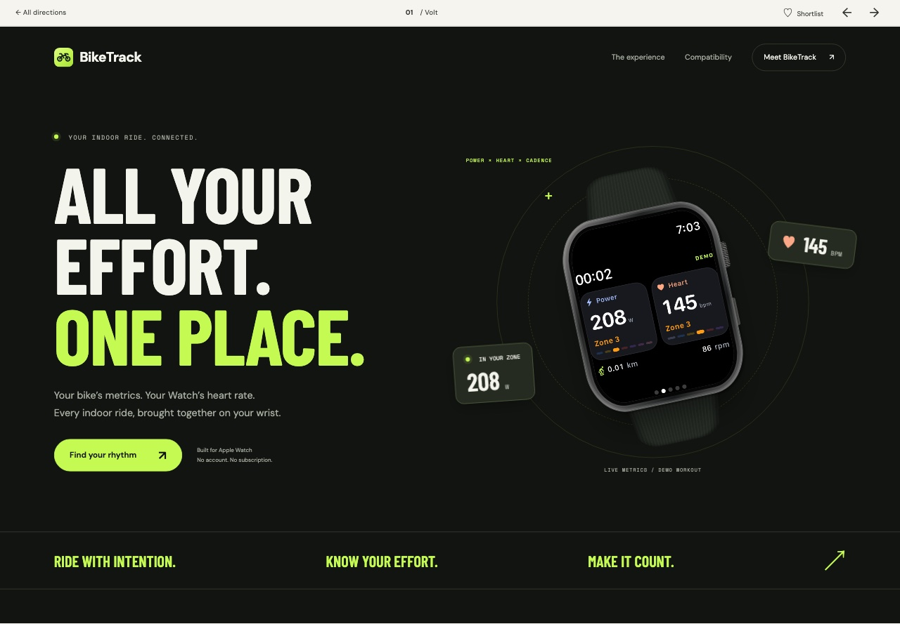
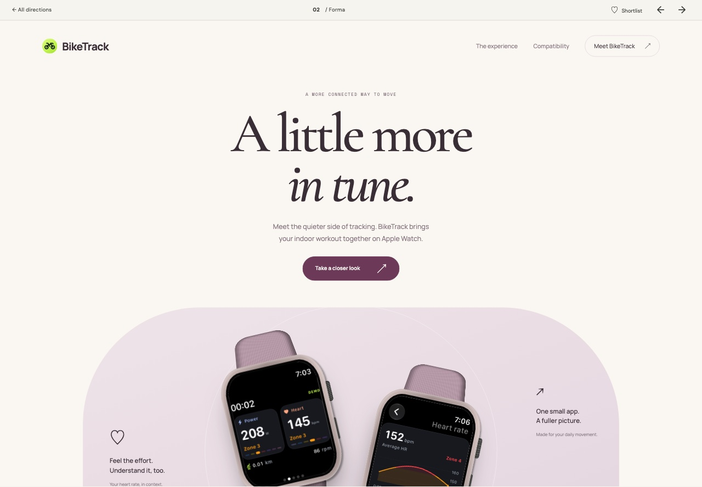
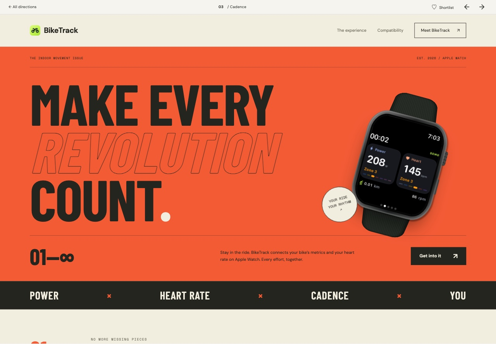
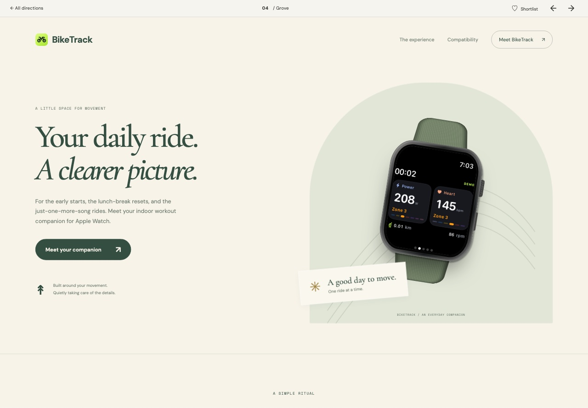
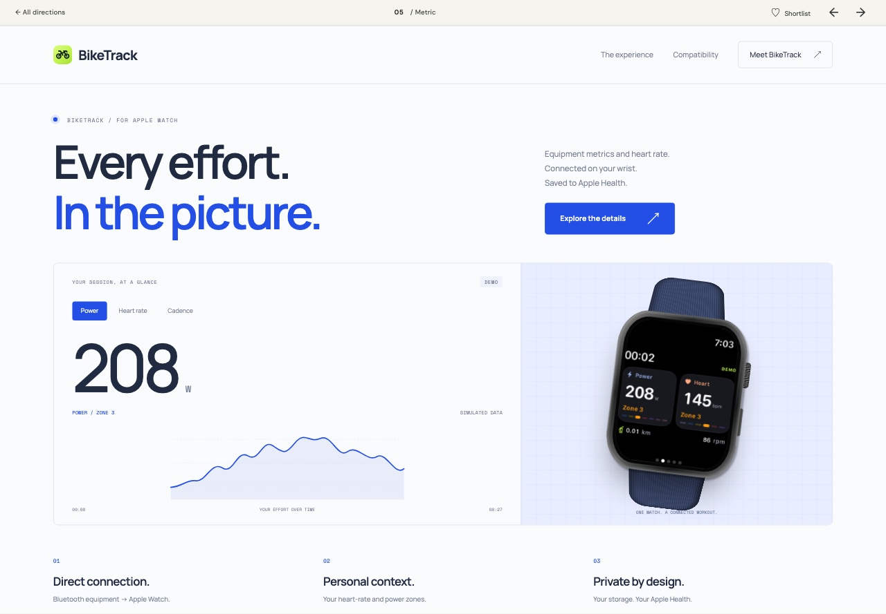
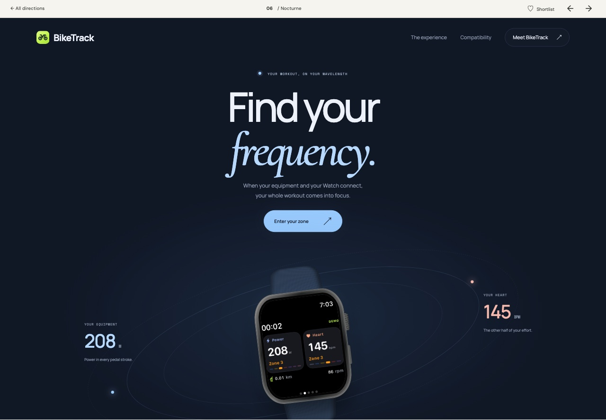

Explore direction01
Volt
An electric lime identity with oversized athletic typography and a product-first layout.
Performance / bold type
Six different ways to tell the BikeTrack story. Explore the full websites, save your favorites, and find the direction that feels right.
Explore the directions ↓Each panel is a live website.
Scroll independently to explore.

Explore directionAn electric lime identity with oversized athletic typography and a product-first layout.

Explore directionSculptural product moments, warm whites, and expressive serif type. Calm, considered, and personal.

Explore directionA bold cycling poster brought to life with orange, compressed type, and an unapologetic editorial rhythm.

Explore directionSage, paper, and an easy reading pace make indoor movement feel like a daily ritual worth keeping.

Explore directionCobalt accents, a modular grid, and an interactive data display put the product’s purpose in sharp focus.

Explore directionA midnight canvas, luminous orbital details, and a floating Watch make the experience feel focused and expansive.
No favorites yet. Tap the heart on any direction to add it here.
Every direction uses real BikeTrack screens, responsive layouts, and the same core product story. Shortlists are saved only in this browser.